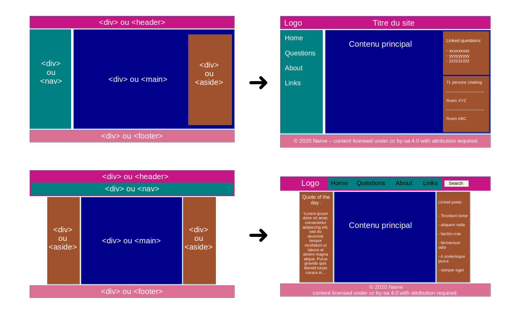
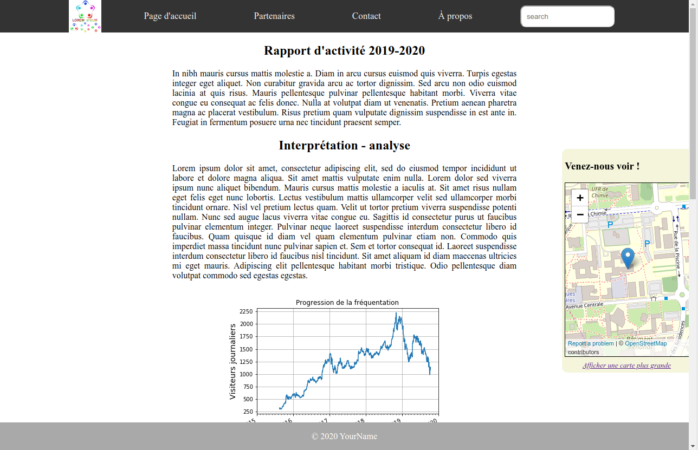
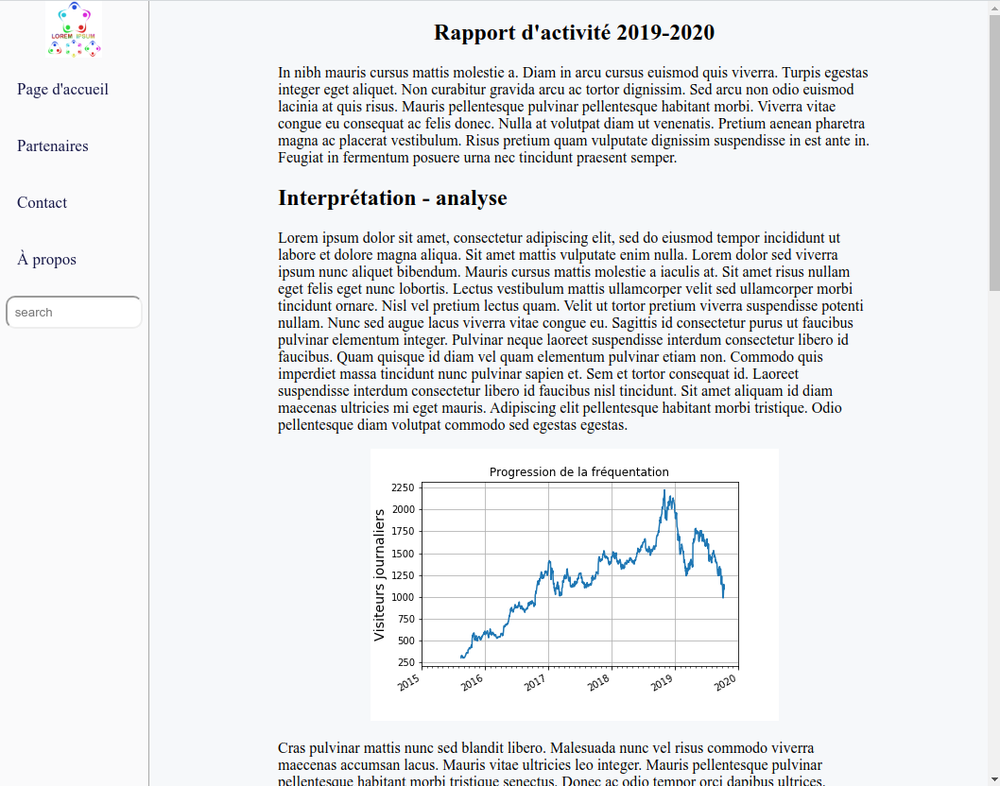
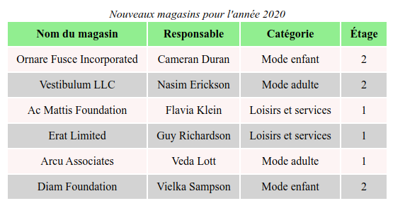

Structurer et styler un document HTML
Lors de ce TP vous allez manipuler plusieurs nouvelles balises HTML.
Dans un premier temps nous allons découvrir rapidement leurs usages.
Dans un second temps vous devrez les utiliser pour compléter et mettre en forme une page web.
1. Le "modèle de boite CSS"
En CSS, tous les éléments sont inclus dans une "boite". Il existe deux types de boites :
-
en ligne (inline) :
- la boite ne créé pas de retour à la ligne et s'insère dans le flux du contenu ;
- les propriétés
widthetheightne s'appliquent pas ; - les propriétés
padding,marginpeuvent être appliquées mais ne vont pas déplacer les éléments voisins sur l'axe vertical (top / bottom) et peuvent créer un chevauchement ; - sert surtout à associer un style à une partie d'un texte (au sein d'un bloc de texte ou d'un paragraphe) ;
- le conteneur générique de ce type est l'élément
<span>; - d'autres éléments en ligne :
<a>,<em>,<strong>par exemple.
-
en bloc (block) :
- la boite s'étend en largeur pour remplir tout l'espace de son conteneur ;
- elle se positionne sur une nouvelle ligne et va engendrer un retour à la ligne avant l'élément qui la suite ;
- les propriétés
widthetheights'appliquent ; - les propriétés
padding,marginetbordervont repousser les éléments voisins ; - sert à agencer le contenu de la page et à regrouper des éléments ensemble ;
- le conteneur générique de ce type est l'élément
<div>; - d'autres éléments en bloc :
<p>ou les titres<h1>,<h2>, et d'autres éléments de sectionnement comme<section>,<article>, etc.
Ce modèle de boite CSS prend la forme suivante :

Code CSS:
.styled {
margin: 5px;
border: solid 2px black;
padding: 22px;
background-color: cornsilk;
box-shadow: 10px 5px red;
}
.keyword {
color: red;
font-style: italic;
/* La propriété suivante ne sera pas appliquée car
elle ne s'applique pas aux éléments en ligne : */
height: 300px;
}
Code XHTML:
<div class="styled">
<p>Some <span class="keyword">interesting</span> content in a paragraph.</p>
<p>Another paragraph with more <span class="keyword">highlighted</span> keywords.</p>
</div>
Résultat:
Some interesting content in a paragraph.
Another paragraph with more highlighted keywords.
2. Formats et unités de valeurs CSS
2.1 Quelques unités acceptées par les propriétés margin, padding, width, height et font-size
Ces propriétés CSS (ce ne sont pas les seules) acceptent des valeurs sous forme d'une "longueur".
Cette longueur peut-être spécifiée de manière relative ou absolue.
| Unités absolues | Description |
|---|---|
px | Pixel |
cm, in, mm | Centimètre, Pouce, Millimètre |
pt, pc | Point, Pica |
| Unité relative | Description |
|---|---|
% | Taille relative à l'élément parent |
em | Relative à la taille de police de l'élément |
rem | Relative à la taille de police de l'élément racine |
Remarque: Lors de l'utilisation de la valeur 0 il n'est pas nécessaire de spécifier d'unité.
2.2 Les formats de valeurs acceptés par les propriétés margin et padding
-
padding: 10px 5px 15px 20px;- lecture dans le sens des aiguilles d'une montre
- signifie : top -> 10px, right -> 5px, bottom -> 15px, left -> 20px
-
padding: 10px 5px 15px;- signifie : top -> 10px, right and left -> 5px bottom -> 15px
-
padding: 10px 5px;- signifie : top and bottom -> 10px, right and left -> 5px
-
padding: 10px;- signifie : top, right, left and bottom -> 10px
-
Il est possible d'utiliser les autres unités existantes (
%,em, etc.). -
Il est possible de les spécifier une à une (en utilisant les propriétés
padding-top,padding-right,padding-bottom,padding-left).
2.3 La valeur spéciale "auto"
Lors de l'utilisation de la valeur auto, la valeur calculée pour la propriété en question est ajustée automatiquement en fonction du contenu et/ou du contexte de l'élément concerné.
Cette fonctionnalité peut être très pratique dans certains cas puisqu'elle va permettre :
- de centrer horizontalement les éléments en bloc avec l'utilisation de la déclaration
margin: auto;(les marges, étirées au maximum et de mêmes longueurs de chaque coté de l'élément vont avoir pour effet de le centrer) - d'ajouter une barre de défilement lorsque cela sera nécessaire pour garder le contenu dans l'élément contenant avec l'utilisation de la déclaration
overflow: auto; - d'afficher correctement des images dont la largeur auraient été définie de manière relative au conteneur avec la déclaration
height: auto;
Remarque: seul un petit nombre de propriétés supporte l'utilisation de cette valeur.
3. Tableaux HTML
La construction d'un tableau HTML nécessite l'utilisation de plusieurs balises :
<table> </table>pour délimiter l'ensemble du tableau<thead> </thead>pour désigner les lignes constituant l'en-tête du tableau<tbody> </tbody>pour désigner les lignes constituant le corps du tableau<th> </th>pour désigner une cellule de l'en-tête du tableau<td> </td>pour désigner une cellule du corps du tableau<tr> </tr>pour désigner une ligne de cellules (aussi bien dans l'en-tête que dans le corps du tableau, elle contient donc des élémentstdou des élémentsth)
Ainsi le code d'un tableau simple contenant 2 colonnes et 3 lignes (dont celle de l'en-tête) prendra la forme suivante :
<table>
<thead> <!-- Début de l'en-tête -->
<tr>
<th>Nom colonne 1</th>
<th>Nom colonne 2</th>
</tr>
</thead> <!-- Fin de l'en-tête -->
<tbody> <!-- Début du corps du tableau -->
<tr>
<td>Data ligne 1 - colonne 1</td>
<td>Data ligne 1 - colonne 2</td>
</tr>
<tr>
<td>Data ligne 2 - colonne 1</td>
<td>Data ligne 2 - colonne 2</td>
</tr>
</tbody> <!-- Fin du corps du tableau -->
</table>
4. Listes (ordonnées ou non) en HTML
Il existe deux éléments HTML qui permettent de désigner un liste :
- les balises
<ol> </ol>désignent une liste ordonnée (ordered list) - les balises
<ul> </ul>désignent une liste non-ordonnée (unordered list)
Ces balises délimitent la liste (i.e. l'élément qui contient les items de la liste). Chaque item d'une liste est représenté par la balises <li> </li>.
Ainsi une liste non ordonnée (liste de course par exemple) prendra la forme suivante :
<ul>
<li>Avocat</li>
<li>Citron</li>
<li>Tomate</li>
</ul>
Une liste ordonnée (instructions de directions par exemple) prendra la forme suivante :
<ol>
<li>Tournez à gauche</li>
<li>Continuez 500m puis prendre la contre-allée</li>
<li>Vous êtes arrivé chez le vendeur de fruits et légumes</li>
</ol>
Vous pouvez remarquer que les listes disposent d'un style par défaut. Ce style est modifiable avec la propriété CSS list-style
5. Groupage des éléments et organisation générale d'une page

6. Autres propriétés CSS utiles pour ajuster l'organisation de votre page
-
position: permet de spécifier le type de positionnement pour un élément (les valeurs possibles sont :static(par défaut),relative,absolute,sticky,fixed) -
display; permet de spécifier le type de rendu pour un élement (en ligne ou en bloc) et la disposition utilisé pour ses enfants (valeurs utiles :inlineetblockpour définir comment l'élément participe au flux des éléments ;flow,table,flexpour définir comment les éléments s'organisent à l'intérieur ;inline-blockpour obtenir des blocs en ligne à l'intérieur de l'élément ;nonepour ne pas afficher l'élément).
6. Mise en pratique (1)
🚀 Consignes:
-
Récupérer les données du jour : TP3.zip et extraire le contenu de l'archive sur votre ordinateur
-
Ouvrir la page
index.html(dans votre navigateur et dans votre éditeur de code). Cette page contient déjà plusieurs blocs de texte formattés sous la forme de paragraphes. -
Éditer cette page pour insérer l'image (
prog.png) de l'évolution de la fréquentation de notre centre commercial. -
Éditer cette page pour intégrer le tableau correspondant aux données du fichier
data.csven utilisant l'élément HTMLtable(cette table devra être agréable à lire, vous veillerez donc à l'espacement dans les cellules ainsi qu'à son style : bordure, couleur de la ligne d'en-tête et couleur des lignes qui contiennent les données, etc.) -
Effectuer le reste de la mise en page :
- barre / menu de navigation plus agréable à utiliser (utilisation de règles CSS pour changer l'apparence du lien au survol, pour faire disparaître les 'puces' qui correspondent à chaque item de la liste, etc.)
- pied-de-page contenant votre nom et les mentions légales éventuelles (copyright, etc.)
-
Si le contenu de votre page dépasse la taille de votre écran, vous devrez veiller à ce que votre page ait un comportement approprié (présence de barre de défilement sur le coté, quid du positionnement du menu de navigation, etc.)
🚀 Faire valider l'apparence de votre page Web
🚀 Vous pouvez également valider votre code HTML et votre code CSS en ligne : https://validator.w3.org/
Remarque : Vous trouverez ci-dessous plusieurs captures d'écran de styles appliqués au même contenu HTML, celui qui vous êtes censé créer.
Vous pouvez vous en inspirer lors de la réalisation de votre page, mais n'hésitez pas à faire preuve d'imagination !
7. Mise en pratique (2)
À réaliser après avoir valider la partie précédente
🚀 Consignes:
-
Vous voulez intégrer un encart contenant une carte permettant de localiser l'emplacement de notre centre commercial. Une des manières les plus simples consiste à utiliser la fonctionnalité appropriée du projet OpenStreetMap. Rendez-vous sur le site www.openstreetmap.org et utilisez la fonctionnalité "Partager" qui permet d'obtenir un code HTML que vous pourrez intégrer à votre page. Ce code HTML contient notamment une balise
<iframe>.- Vous veillerez à ce que l'export inclue le marker indiquant la position de notre centre commercial.
- Vous veillerez à ce que la carte s'insère de manière harmonieuse au reste de la page.
-
Il est maintenant nécessaire d'ajouter une barre de recherche à notre page. Nous n'avons pas encore abordé les éléments HTML permettant de faire saisir des informations à l'utilisateur. Le principal d'entre-eux est l'élément
<input>. Prenez connaissance des différents types de champs qu'il permet de créer en lisant la documentation en ligne : https://developer.mozilla.org/fr/docs/Web/HTML/Element/Input puis ajouter un élément<input>à votre page.- Vous veillerez à ce que cet élément s'insère de manière harmonieuse au reste de la page (localisation dans la barre de navigation, ou dans un panneau latéral par exemple).
Exemples



8. Retour sur quelques aspects du positionnement des éléments
8.1 Le centrage d'un élément (dans la page, dans son conteneur, ...)
Ici en définissant une largeur (width) et des marges automatiques (margin: auto) sur un élément en bloc ; puis en demandant à centrer le texte autour de l'axe vertical au sein de cet élément (text-align: center).
Code CSS:
.a {
width: 50%;
padding: 3px;
background-color: lightgreen;
border: solid 1px gray;
}
.b {
margin: auto;
}
.c {
text-align: center;
}
Code XHTML:
<section>
<div class="a">Bloc utilisant la propriété 'width', non centré</div>
</section>
<hr>
<section>
<div class="a b">Bloc utilisant la propriété 'width', centré ('margin:auto')</div>
</section>
<hr>
<section>
<div class="a b c">Bloc utilisant la propriété 'width', centré ('margin:auto') et texte aligné au centre</div>
</section>
Résultat:
8.2 Utilisation de display: inline-block; pour avoir des blocs en ligne :
Les blocs qui utilisent cette propriété vont se comporter comme des éléments en bloc (respect des propriétés width, height, etc.) mais ne vont pas créer de retour à la ligne avant / après l'élément, lui permettant de s'afficher à coté de ses éléments frères.
Code CSS:
.a {
background-color: cornsilk;
border: solid 1px gray;
padding: 4px;
width: 30%;
}
.b {
display: inline-block;
}
Code XHTML:
<div>
<div class="a">Bloc 1</div>
<div class="a">Bloc 2</div>
<div class="a">Bloc 3</div>
</div>
<hr>
<div>
<div class="a b">Bloc 1</div>
<div class="a b">Bloc 2</div>
<div class="a b">Bloc 3</div>
</div>
Résultat:
8.3 L'utilisation de la propriété position pour changer le type de positionnement d'un élément
(voir la démonstration sur https://developer.mozilla.org/fr/docs/Web/CSS/position)
-
positionnement relatif avec
position: relative:- l'élément est décalé à l'aide des propriétés
top,right,left,bottompar rapport à sa position normale dans le flux du document - celà n'affecte pas les boites voisines mais l'élément peut prendre place au dessus de ses éléments frères
- l'élément est décalé à l'aide des propriétés
-
positionnement absolu avec
position: absolute:- l'élément est positionné à l'aide des propriétés
top,right,left,bottom - l'élément est sorti du flux et ne participe plus au positionnement de ses éléments frères
- l'élément est positionné à l'aide des propriétés
-
positionnement fixe avec
position: fixed:- l'élément reste fixe dans la page : il n'est pas affecté par le défillement de la page
- il s'agit d'un positionnement absolu : l'élément est sorti du flux et ne participe plus au positionnement de ses éléments frères
-
positionnement en adhérence avec
position: sticky:- il s'agit d'un positionnement relatif jusqu'à un seuil donné puis l'élément se comporte ensuite comme un élément fixe
La différence de participation au flux des éléments entre sticky et fixed est la raison pour laquelle il pouvait être plus judicieux d'utiliser sticky pour positionner de manière fixe l'élément header ou l'élément footer tout en permettant sa contribution au flux des éléments lors des exercices du TP3.
8.4 La possibilité de faire "flotter" des éléments
La propriété float permet de faire sortir l'élément du flux et de le pousser dans la direction indiquée par la valeur de la propriété (float:right ou float:left).
Ses éléments frères vont venir prendre place autour de lui.
Lorsque l'on souhaite interdire le voisinage avec un élément flottant et reprendre le flux normal du document, on utilise la propriété clear (avec la valeur right, left ou both selon le besoin).
... pour les répartir sur la page (1)
Code CSS:
.s {
text-align: center;
background: lightgreen;
padding: 4px;
}
.left {
float: left;
width: 48%;
}
.right {
float: right;
width: 48%;
}
Code XHTML:
<div class="left s">Bloc de gauche</div>
<div class="right s">Bloc de droite</div>
<div style="clear: both;"></div> <!-- Cela va permettre au titre
en dessous des blocs verts de ne pas venir se coller à eux -->
Résultat:
... pour les répartir sur la page (2)
.s {
text-align: center;
background: lightgreen;
padding: 4px;
margin: 4px;
border: solid 1px black;
}
.floatbox {
float: left;
width: 22%;
}
Code XHTML:
<div class="floatbox s">1</div>
<div class="floatbox s">2</div>
<div class="floatbox s">3</div>
<div class="floatbox s">4</div>
<div class="floatbox s">5</div>
<div class="floatbox s">6</div>
<div class="floatbox s">7</div>
Résultat: